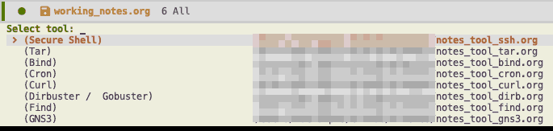

A practical note taking system
Table of Contents
My notetaking system has been a long on-going project. It started with (Castel 2023), and has since been through a lot.
From vim to emacs.
From \(\LaTeX\) to Org Mode.
From text only to inline images and complementary handwriting parts.
It evolved along with me, as I better understood my way to function, not solely within an academic framework, but in general, and in this article, I will try to properly describe its current form through my workflow.
Like most people that have lost enough time around note management and creation, I got into this to improve an aspect of my workflow that I believed would be worth optimizing. It was. Judging from my experience, though, falling into the note taking rabbit hole is not for the faint of heart; if you start tinkering, it will take some time to get back to writing without thinking about the process.
If you, however, have decided to not pay attention to this warning… Prepare yourselves!
If this article feels like its promoting my note taking stack, this was not intended. My goal is to expose my process so that your feedback (supposing it exists :P ) will allow me to see its problems(Ahrens 2022).
Before we begin
This article tries to avoid getting into the specifics of any of the well-known note taking systems or configurations I may or may not have been inspired from. I have tried to include many links, throughout this article, so that you can begin your own journey
If it becomes too technical at times, I am sorry, but it was intended, with a goal of achieving the same level of attention to detail as Castel. A goal that is beyond my reach I suppose, yet … I hope there is truth in the aim for the moon, even if you fail you’ll be among the stars mentality.
Introduction to note types
Not all notes are the same.
Notes should be created with a purpose in mind, and with a clear context in which they would be accessed. Notes that you will read again and again because they have a great detail of information on a difficult theoretical subject, and help in research and in solidifying one’s understanding are significantly different to notes that aim to simplify that subject and the distinction becomes even more apparent with notes that are supposed to be glanced at and help you use a certain piece of software or methodology.
In my configuration there exist four distinct types of notes:
Each one of them would need a rather extensive article on the many phases that
I feel that it is important to state that I also rely heavily on org-capture for
quick notes or fleeting notes as described in Zettelkasten
Working Notes
Working notes are, essentially, small chunks of important methodologies, tips and commands I develop around a topic and keep within a keystrokes’ reach for when I have trouble in that specific context.

Figure 1: Here you can see some sample working notes on certain tools, managed by KLP
Unlike the other types, working notes do not have a role in the learning process. If anything, they are one of its handy products.
They are, however, indispensable in practicality. Building a little bit on this, working notes, as a whole, are any user’s ideal handbook. They can be cheat sheets with a little bit of information, they can (and should) point to resources you’ll need when viewing that note, they can offer some simple methodology tips, and much more, tailored specifically to you..
I have implemented working notes with my very first package, KLP. Using the following configuration, everything works smoothly allowing me to access and create working notes instantly.
(use-package klp :straight (:host github :repo "chatziiola/klp") :config (setq klp/static-notes-dir "~/my/path") :general (lc/leader-keys "ln" '(klp/open-note :which-keys "Open tools cate") "lt" '(chatziiola/open-thm-room :which-keys "Open thm categ") "lT" '(chatziiola/open-tools :which-keys "Open tools cate")) )
To get a better understanding of how to use KLP, if you go that way, see the following personalized functions:
(defun chatziiola/open-tools () "Macro to use `klp/open-note' to open all `notes_tool_title.org' files." (interactive) (klp/open-note "tool" '("TITLE"))) (defun chatziiola/open-thm-room () "Macro to use `klp/open-note' to open all `notes_thm_title.org' files." (interactive) (klp/open-note "thm" '("DATE" "TITLE")))
Lecture Notes
After having completed this article I noticed that I did not write about
cdlatex. If you use org heavily and would like to have inline \LaTeX, completion
and much more give it a shot.
I am a university undergrad, so quality lecture notes are of quite some importance to me. In this context one cares about quickly and efficiently jotting down what the professor(s) said, along with their fleeting thoughts, so that they can be revised at a later time, allowing them to gain a deeper understanding on the subject.
Unlike Castel, I have decided against spending time to configure a viable solution for plotting while in lectures, even though I know such a system can be impressively beneficial and quick. Instead what I have found to be a good, even though not so classy approach, to this is using the inline-images functionality that Org Mode offers to add photos from my phone, the Internet and from my own handwritten sketches. This means that my lecture notes are initially image free till I revisit them, but this is acceptable by me.
Examples of such images you can see in my published lectures/index.html
Furthermore, lecture notes are almost identical to book notes, in their core.
The reason why there is a clear distinction between them in my configuration, is
a purely practical one. They do not work the same way, one uses org-lectures
while the other one uses org-noter, and they are used under different
circumstances. In lecture notes I strive for speed and completeness, so that I
can properly study on my own, while book notes do not have such strict time
constraints. In them, I want to be as thorough as possible, so that I can
distill the important information and gain a deep understanding of the subject.
As I described in the previous paragraph, for lecture notes I use my newly published org-lectures package, with the following simple configuration1.
(use-package org-lectures :straight (:host github :repo "chatziiola/org-lectures") :config (setq org-lectures-dir (expand-file-name "/my/path")) (setq org-lectures-static-course-files-dir "/my/path") (setq org-lectures-roam-id-integration t) (setq org-lectures-current-semester "6") :general (lc/leader-keys "ll" '(org-lectures-find-course :which-keys "lecture") "lF" '(org-lectures-dired-course-folder :which-keys "Open course's folder")) )
Book Notes
When reading a book, an article or even watching a video or a course, new ideas will, naturally, emerge. These ideas can be simply fleeting notes, as they are yours and only through development and elaboration can they be transformed adequately to reside in your slip box, helping you in your research, however, they can also be literature notes.
Zettelkasten method with the keywords book article video, contains ideas
expressed in that medium, obviously rephrased and handled according to Luhman’s
technique.
TODO hint at bibliography and zotero TODO hint at ebooks
Even though in the past I was a firm believer that regular books were superior to ebooks and could not even be remotely compared, I have started, since I was forced to study in electronic format for my university courses, to find many areas in which ebooks have more to offer, without practically any drawback:
- Easy references
- Always with you
Permanent Notes
These notes are stored as if they were to be published. They are independent, and thus do not rely on other notes to have meaning.
To be frank, I do not have much to say on my permanent notes. I use the
wonderful org-roam package, and I try to work along the lines of
(“Org-Roam User Manual” 2023), (Jethro 2023), (“Capturing Notes Efficiently with Org Roam - System Crafters” 2023).
After attending a lecture, reading an article or a book, or when trying to
connect some concepts I have trouble with together, I start breaking everything
down to smaller notes. Through this process (and org-roam-ui helps), I often get
a much better view of the section I am studying at the time, understanding the
relationship between different pieces of theory and connecting them to real life
practices or material that has been previously studied. It is not perfect, but
it is helpful.
This gif perfectly illustrates the relationship between book, lecture notes(left) and permanent notes(right) Summing permanent notes up, through a lot of trial and error I have come to believe that they should follow these policies.
KIS(S)
Keep it Small. I’m trying really hard not to sum this section up as: “Size matters”. My sense of humor, though, prevents me.
I have a principle of trying to keep my note files as small and as consistent as possible. So far I am not doing a great job on the second, but I try really hard on the first one: If my notes are not of bibliographic nature, I try to limit them so that they can be fully contained in my computer screen. 2
And funnily enough, with these we have actually covered all of the theory around my workflow.
KIS(S)
Keep It Simple. Try to avoid overthinking or over engineering stuff. You should focus on the material you are at the time studying or working on. Focusing on the practice of note taking (even though, as (Ahrens 2022) suggest is beneficial due to its deliberate character), is from my experience problematic and hinders the process in the long term, by decreasing your performance and willingness to take notes.
References
Ahrens, Sönke. 2022. How to Take Smart Notes: One Simple Technique to Boost Writing, Learning and Thinking. 2nd edition, revised and expanded edition. Hamburg, Germany: Sönke Ahrens.
Castel, Gilles. 2023. “Castel.Dev.” Accessed March 8. https://castel.dev/.
Jethro, Kuan. 2023. “How I Take Notes with Org-roam.” Accessed January 20. https://jethrokuan.github.io/org-roam-guide/.
“Capturing Notes Efficiently with Org Roam - System Crafters.” 2023. Accessed March 9. https://systemcrafters.net/build-a-second-brain-in-emacs/capturing-notes-efficiently/.
“Org-Roam User Manual.” 2023. Accessed March 9. https://www.orgroam.com/manual.html.